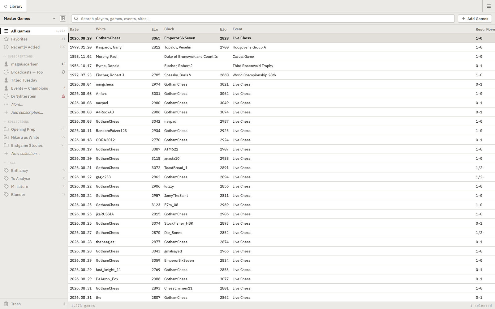
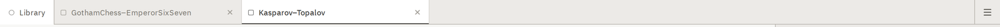
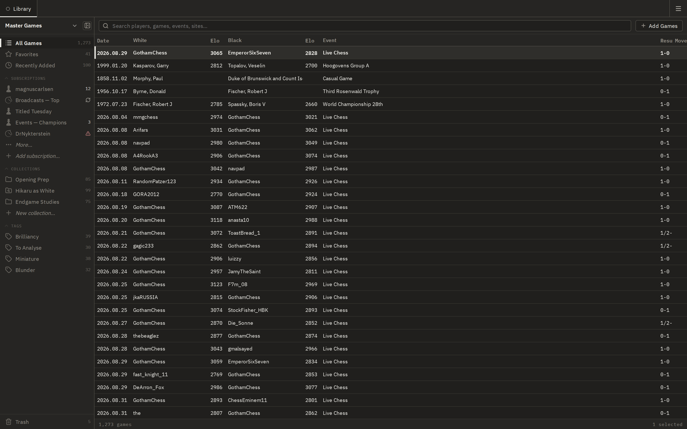
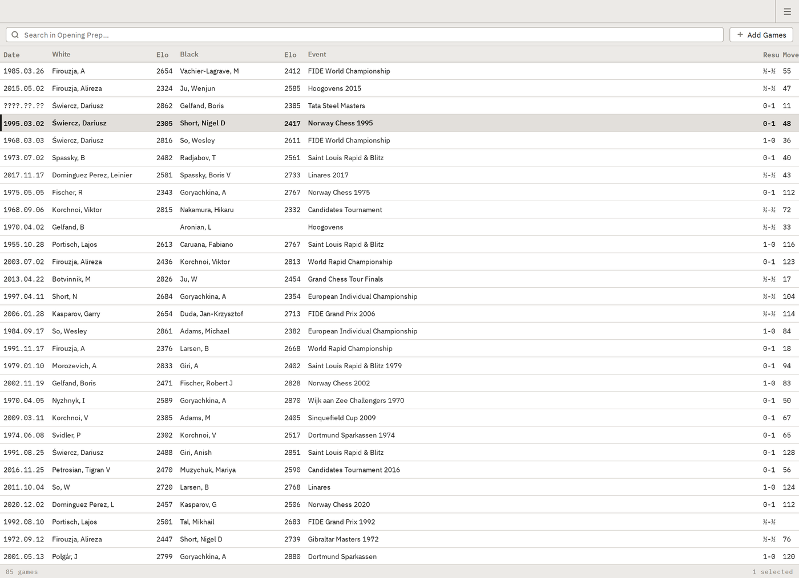
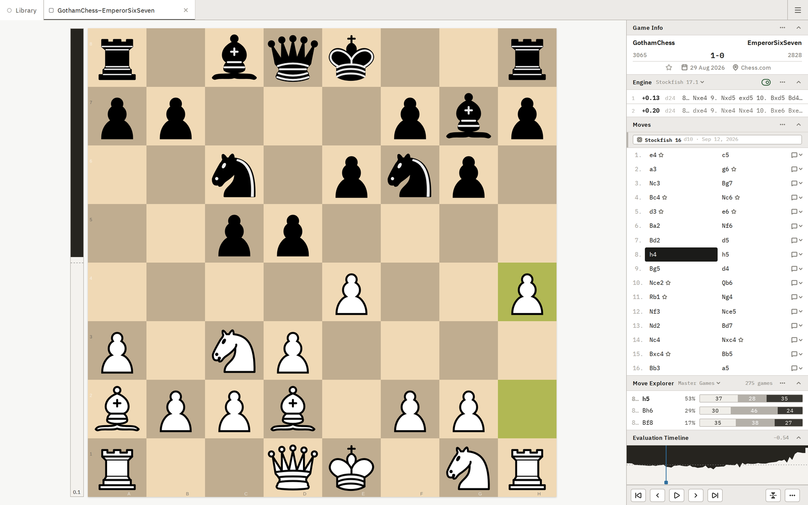
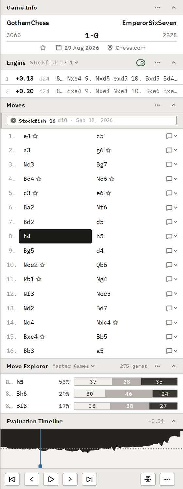
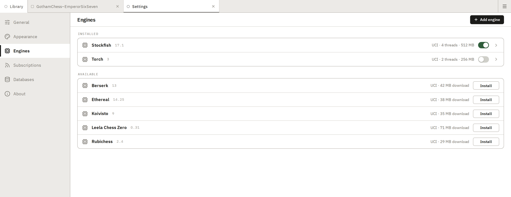

A chess library and analysis tool that installs from your browser.
Run on your desktop without the internet

Modern development tools and current libraries throughout — nothing stale, nothing outdated, every dependency carefully selected.
Chess software has a habit of ageing in place. This is built on current releases and nothing else — a modern reactive framework, SQLite for storage and fast retrieval, and the board and rules engines Lichess itself runs. That is the part you notice: a board that looks like the one you already play on and stays crisp at any size, searches that come back at once, and an application smaller than a single photograph.
Compiles the interface ahead of time, so very little framework code ships with it.
Games live in a proper database, not a pile of text files. That is what makes real game management possible — collections, tags, filters and a search that answers across thousands of games.
The board itself — dragging, animation, arrows, coordinates.
Move parsing, SAN, and checking that every move is legal.
One open icon set, bundled with the application rather than fetched.
Install from the browser and it opens in its own window, like any other desktop application.
Syncing adds games when you are online. Nothing else waits on a connection.
Everything is inside that figure
One download and it is yours. No installer, no runtime to fetch, no second step.
Excludes your game library, which grows with the games you add
Chessgui behaves like the applications you already use. Nothing here has to be learned twice.
01 Navigation
Every game you open takes its own tab, and you move between them the way you move between pages in a web browser. The Library stays pinned at the left, so there is always a way back to it.


Follows your system unless you choose · the same window, the same layout, either way
Two places to be: one for finding a game, one for studying it.
02 Library workspace

Searching, filtering and managing games looks and behaves the way modern media management applications already do — the same interface you know from the apps that hold your photos, music and video.
A sidebar for collections, tags and subscriptions. A search field that narrows the table as you type, and a table built for thousands of games rather than dozens. Double-click a row and the game opens in its own tab.
Import games from online sources, or subscribe and keep receiving them.
03 Game workspace


The board takes the room. Beside it stands The Game Stack — every piece of information about the game, stacked in one column and ready for analysis — and a scrubber — the Evaluation Timeline, anchored above the game controls — that runs the moves forward and in reverse.
The Game Stack includes the analysis tools every serious chess player needs.
04 Bring your own — engines and databases
Engines and databases work the same way: a list of what is installed, and a list of what is available. Install a popular one with a single click, or register a binary or database file you already have. Both are offered for convenience; neither is required.
Threads and hash are yours to set.
A downloaded database arrives indexed — no wait before you can search it.

Install
Install icon at the end of the address bar, or menu → Install.
File → Add to Dock.
Install icon at the end of the address bar, or menu → Apps.
Licence
Free software under the GNU General Public License, version 3 or later. It has to be: Chessground and chessops are both GPL, and both are compiled into the application.